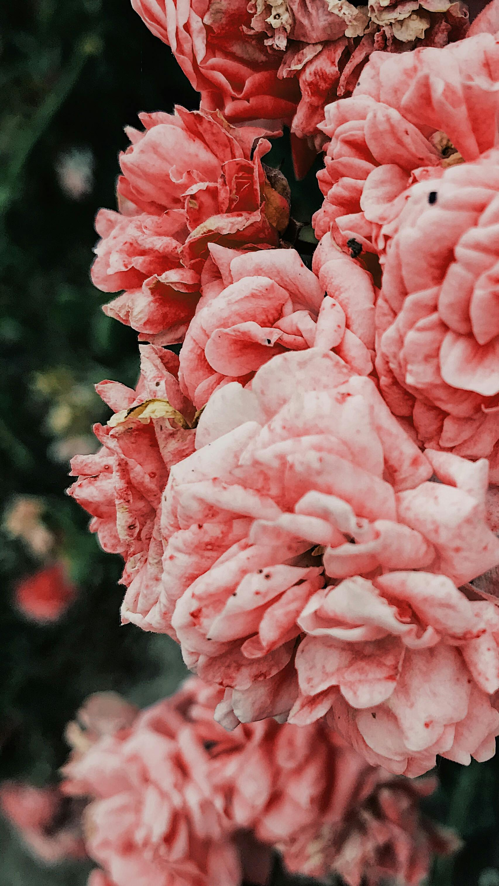

Carnations
Origin
The carnation has been cultivated for the last 2,000 years. The wild carnation is native to Greece, Italy, Spain, and other Mediterranean countries. They were cultivated by the ancient Greeks and Romans, and later became popular in Europe and Asia. The name "carnation" is thought to come from the Latin word "caro" or "carnis," meaning "flesh," referring to their original pinkish flesh color.
Carnations
Care
Tall varieties of carnations may need staking to prevent them from falling over, especially during windy conditions. Also avoid overhead watering to reduce the risk of fungal issues.
- Direct Sunlight
- Well Watered, soil is consistenly moist
- Thrive in well-drained, slightly alkaline soil with a pH level of around 6.7 to 7.5.
Regularly deadhead spent flowers to encourage new blooms and prevent the plant from becoming leggy. Trim back the stems by about one-third after blooming to maintain shape.